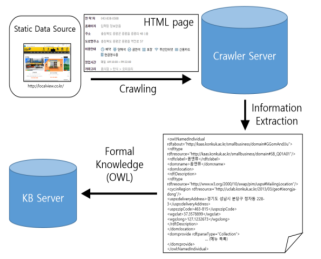
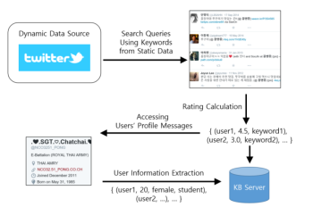

Introduction¶
Malware¶
Malware berasal dari kata malicious software yang dapat berarti sebuah perangkat lunak yang sengaja diciptakan untuk merusak sebuah sistem [1]. Dari survey yang dilakukan oleh Paolo Passeri, serangan siber masih didominasi oleh serangan Malware, yaitu sebesar 35,61% [2]. Menurut [3], Proses web crawling terdiri dari dua jenis, yaitu Collecting Static Data dan Collecting Dynamic Data. Collectiong Static Data berarti melakukan crawling pada situs website yang statik, dan kemudian akan dilakukan ekstrasi informasi menggunakan metode sesuai kaidah (Resource Description Framework) RDF dan Web Ontology Language (OWL). Berbeda dengan static, Collecting Dynamic Data merupakan proses pengambilan data pada situs web yang bisa saja berubah-ubah dari waktu ke waktu. Proses crawling memerlukan sebuah perangkat berupa server yang terhubung ke internet dan mendukung bahasa pemrograman Python versi 2.x.
Collecting Static Data Process
{kind=link}
Collecting Dynamic Data Process
{kind=link}
Dionaea¶
Dionaea merupakan sebuah honeypot yang dirancang untuk menjebak malware yang mengeksploitasi kerawanan layanan dalam jaringan, sehingga didapatkan salinan dari malware tersebut. Dionaea dapat menghasilkan log dalam format basis data menggunakan SQLite di samping log dalam format teks, sehingga lebih mudah untuk dilakukan analisis [4]. Karena Dionaea dapat menentukan host yang terinfeksi malware, maka tindakan pada host yang terinfeksi dapat dilakukan agar dapat dihentikan penyebaran malware tersebut ke host lain dalam jaringan.
Cara Kerja Dionaea
Tujuan Dionaea adalah untuk menjebak malware mengeksploitasi kerentanan yang diekspos oleh layanan pada sebuah jaringan, tujuannya adalah untuk mendapatkan salinan malware tersebut. Sehingga dapat dikatakan bahwa Dionaea bertujuan untuk mendapatkan duplikasi data dari malware [4]. Perangkat lunak (software) cenderung memiliki bug, yang seringkali dapat dieksploitasi oleh pihak lain untuk memperoleh informasi atau keuntungan. Dionaea menggunakan bahasa pemrograman python sebagai bahasa scripting, libemu untuk mendeteksi shellcode, mendukung Ipv6 dan TLS.
Daftar Pustaka¶
[1] N. Idika and A. P. Mathur, “A survey of malware detection techniques,” Purdue Univ., p. 48, 2007.
[2] Paolo Passeri, “January – September 2018 Cyber Attack Statistics,” 2018. [Online]. Available:https://www.hackmageddon.com/2018/10/15/january-september- 2018-cyber-attack-statistics/. [Accessed: 24-Junet-2020].
[3] S. M. Kim and Y. G. Ha, “Automated Discovery of Small Business Domain Knowledge using Web Crawling and Data Mining,” 2016 Int. Conf. Big Data Smart Comput. BigComp 2016, pp. 481–484.
[4] Suzuki, H. (2011) Internet Infrastucture Review, Internet Initiative Japan, Vol 11.